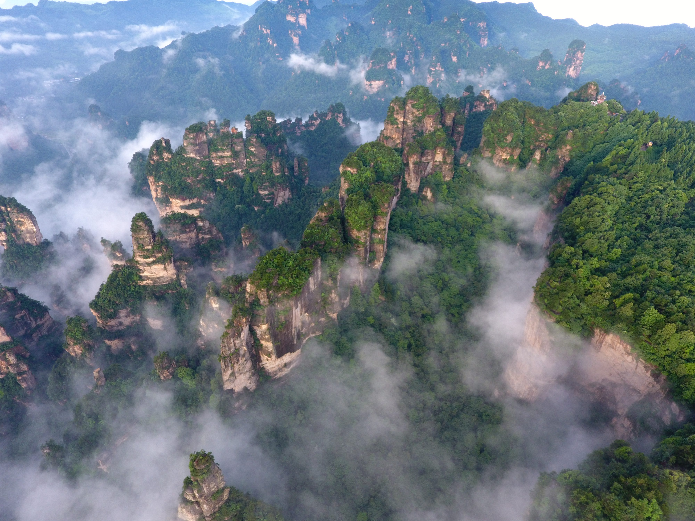

Route Itinerary
Wuhan - The City of Cherry Blossoms
Located at the confluence of the Yangtze and Han Rivers, Wuhan is a major cultural and economic center. Famous for its stunning cherry blossoms in spring at East Lake, the iconic Yellow Crane Tower, and delicious hot dry noodles (reganmian).
Where to Stay
-
Wuhan Plaza / Jianghan RoadCity center, nightlife, shopping
-
East Lake AreaScenic, peaceful, near cherry blossoms
-
Chuhe HanjieModern entertainment district
💡 If visiting in March-April, book hotels near East Lake early for cherry blossom season.

Fenghuang - Phoenix Ancient Town
One of China's most beautiful water towns with traditional stilt houses built along the Tuojiang River. Explore the magical night views, visit ancient city gates, and experience Miao ethnic culture. Perfect for photographers and history lovers.
🚄 From Wuhan to Fenghuang
- High-Speed Train: 2.5-3.5 hours
Where to Stay
-
Old Town (Tuojiang River)River views, stilt houses
-
Outside Old TownQuieter, better value
💡 Stay in a riverside guesthouse for the best night views. Fenghuang comes alive after dark!

Zhangjiajie - The Avatar Mountains
The real inspiration for the floating mountains in James Cameron's "Avatar". Explore thousands of towering quartz sandstone pillars, walk on the world's tallest and longest glass bridges, and take breathtaking cable car rides. A must-visit for nature lovers.
🚄 From Fenghuang to Zhangjiajie
- High-Speed Train: 1-1.5 hours
Where to Stay
-
Zhangjiajie CityConvenient, good restaurants
-
Wulingyuan Scenic AreaCloser to park entrance
-
Tianmen Mountain AreaNear cable car station
💡 Stay in Wulingyuan for easy access to the national park. Buy a 4-day park pass for the best experience.
Changsha - Capital of Hunan Province
Known for its spicy Hunan cuisine (the hometown of Chairman Mao), Changsha offers a vibrant cultural scene. Visit the iconic Orange Island with its giant Mao Zedong statue, explore ancient Yuelu Academy, and indulge in world-famous stinky tofu and spicy crayfish.
🚄 From Zhangjiajie to Changsha
- High-Speed Train: 1.5-2.5 hours
Where to Stay
-
Wuyi SquareCity center, shopping, nightlife
-
Orange Island / XiangjiangRiver views, scenic
-
Yuelu Mountain AreaNear university, cultural
💡 Don't miss Taiping Old Street for snacks. Changsha is the birthplace of stinky tofu!
Return to Wuhan
Complete your Central China adventure by returning to Wuhan, where you can do some last-minute shopping or visit any attractions you may have missed at the start of your journey.
🚄 From Changsha to Wuhan
- High-Speed Train: 1.5-2 hours